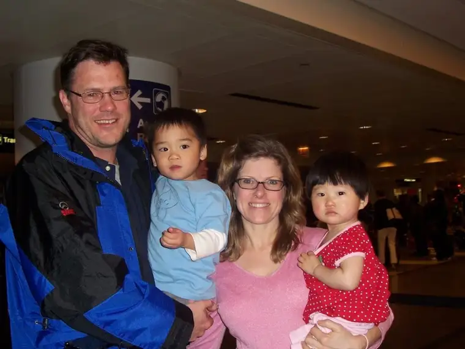
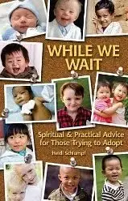

{kind=link}

Author and mother Heidi Schlumpf with her family,Edmund (husband) and kids, Sam, 2.5, and Sofie, 16 mos.
{kind=link}
May being a month that honors mothers, Peace Garden Writer is glad to feature a second helping of “Spotlight’s on…” to highlight another wonderful book fashioned from a mother’s heart. This feature spins off from its initial location at Peace Garden Mama, my other blog focusing on faith, family and following the muse.
Heidi Schlumpf’s While We Wait illuminates the oftentimes arduous plunge into the adoption process. And while its subtitle, Spiritual & Practical Advice for Those Trying to Adopt, hints at the book being a handbook for adoptive parents, Heidi approaches her subject not so much as a manual but an honest sharing of personal experience, involving plenty of both heartache and hope.
Heidi, thanks for joining us! Before we get into your book, I just want to offer a belated Happy Mother’s Day. I imagine this one was very special to you as you welcomed your second and long-awaited child into your home just a few months ago. How’s it going so far in your new family of four?
Thank you, Roxane. Our family of four is doing very well. Sam, our son from
What about motherhood has most surprised you?
How exhausting it is! I was not naïve, but I have a whole new respect for parents who stay home full-time with their small children (especially my own mother, who also had two kids only 13 months apart). My husband and I have practiced “attachment parenting,” which is highly recommended for adopted children who have been institutionalized, and that is particularly draining on parents, especially when you work full-time, as I do. My husband works part-time and is home with the kids when I am teaching, so we share the work, but it’s still tiring—especially at this age (I turn 46 in a few weeks)! But I wouldn’t trade it for anything. I am so grateful to be the mom of these two wonderful children.
Motherhood is indeed a precious thing, and I came to appreciate my own motherhood all the more through reading about your journey toward it. Even though the adoption process is not one that I can claim to have experienced, I do have connections with people who are adopted and I felt quite attached to your story. You did go through a lot of suffering, and perhaps that’s the reason I connected, since suffering is a universal experience, even if adoption isn’t. Would you agree that that aspect of your book widens its appeal?
Yes, a number of people who are not adoptive parents have said the book really resonated with them. That makes sense, because the spiritual lessons that I learned or re-learned during our almost five-year wait were ones that applied during previous struggles in my life. For example, that God doesn’t cause suffering, but rather God is with us in our suffering, or the importance of prayer and a spiritual community when going through difficult times. Those things are universal and not unique to those trying to adopt.
How did the idea and opportunity for this particular book arise, and did your approach change as you went along? I sense that the story became more personal than you perhaps expected at the outset. Is that true?
Greg Pierce of ACTA Publications, a Catholic publisher in
I love quotes, Heidi, and you included some wonderful quotes. In fact, each chapter begins with one, and so at the outset, you prompt your reader to think deeply, preparing them for what is about to unfold. How did you find all those great quotes that worked in so expertly with the material?
When I was an editor at U.S. Catholic, I edited a page of quotes that we called “Spirituality Café,” so some came from there. I also include inspirational quotes on my knitting blog, Spiritual Knitter (www.spiritualknitter.blogspot.com). I guess I’ve always been a collector of inspirational words. One of the most fun parts of putting the book together was collecting the quotes and matching them with the appropriate reflections.
Was this a hard book to write, or did it just spring forward from your experience in a way that was more healing than heavy?
It was extraordinarily healing to write the book, in that it forced me to reflect spiritually during the very difficult process of adopting. We started the paperwork for our daughter in 2005, when a typical adoption from
I love that you dedicate the book to your husband, “To Edmund, who waited with me.” How vested was he in the process of your writing this book, or did he pretty much leave you alone in the crafting of it?
My husband is a much more private person than I am, but I am grateful that he allowed me to tell our story in this book and elsewhere. He read the completed manuscript and made a few suggestions.
What can readers interested in this book expect to take away from it? What questions do you hope you will have answered by the time they reach the final pages?
I hope that those going through the adoption process come away from the book with a feeling of peace and with some comforting words to go back to when their agency calls with yet another paperwork request or their best friend announces she’s pregnant for the third time or on Mother’s Day or other holidays that can very difficult when you’re waiting for a child.
The book also makes a great gift for families and friends of those who are adopting, to give them some insight into what prospective adoptive parents are going through. Friends of mine have said after reading the book, “I had no idea you were going through all that.”
If you could give prospective adoptive parents encouragement for the possibly long road ahead, something that might save them from at least some of the difficulty you endured during the long wait, what would it be?
I would tell them God did not plant this strong desire to be a parent in them, only to make it impossible for them to fulfill it. So don’t blame God, and don’t give up. Also, remember that waiting is a spiritual discipline that requires spiritual resources, like prayer, silence, and letting go. There are things from our Catholic tradition that I found particularly helpful, like the psalms, and resources from other traditions that helped me, too, like mindful breathing. I do think that the lessons learned while waiting will help you be a better parent, too.
Do you have plans for future books, and if so, what do you have in mind?
My second book, a collection of prayers I compiled, commissioned and edited for the University of Notre Dame, is going to press this week! The Notre Dame Book of Prayer, published by Ave Maria Press, will come out in September and is a beautiful gift book for anyone who loves Notre Dame. It’s been a huge project for the past two years, so I think I’m going to take a break from book writing for a little while.
Heidi, I just have to say thank you. Your book was a true gift to me, not only in the way it shed light on what others I know have gone through in welcoming their adopted children into their homes, but in reminding me that most really wonderful things in life require a wait of some sort, but that the waiting does eventually cease.

{kind=link}
Thank you, Roxane. And your blog is a gift to so many, so thank you for letting me talk about my book here. Here’s the Amazon link to While We Wait: http://www.amazon.com/While-We-Wait-Spiritual Practical/dp/0879464062/ref=sr_1_3?ie=UTF8&s=books&qid=1274105606&sr=8-3
And thank you, Heidi, for gracing Peace Garden Writer with details of your book and life as a mother.
Q4U: Feel free to ask Heidi a question, or answer this: What are you waiting on these days?